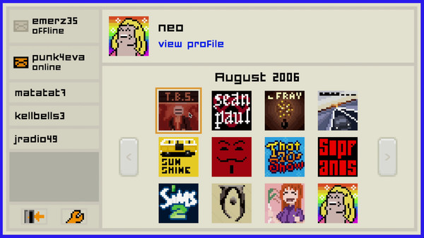
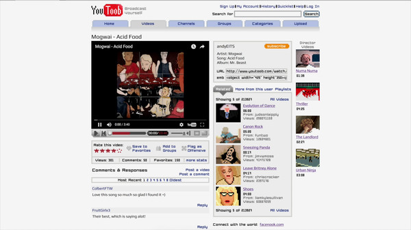

Plot
Emily is Away Too is a singleplayer game that costs $4.99 on Steam. Just as before, it is another interactive exprience where players get to choose responses to friends through a fictional MySpace replica.
This time around, although with a different story and character, the storyline begins in the summer of 2006, before your senior year.
Screenname
Just as with 'Emily is Away,' you once again get the option to choose your screenname and first name. Although the layout is a bit different, the AI functions the same way as before.
You also still get to have your experience on an old Windows desktop with the retro startup sound, as well as similar typing and clicking audios that were present in the previous game.
Profile Customization
You once again get a range of options to select as your profile picture. But, you also get to create and change your profile bio.
On your profile, you can change the text and background colors, as well as select from a group of options of text that will display as your bio on your profile. You can also change the colors of your text and text background when sending chat messages to the in-game characters.
Links
In-game characters will sometimes send you outside links to music, etc. Later after meeting 'punk4eva', she will send you a link to a site named Youtoob (an obvious connection to YouTube).
When you press the link, it pulls up another tab on the in-game desktop to the website, where you are able to watch the link's video and see recommended content, just as you would see on YouTube.
